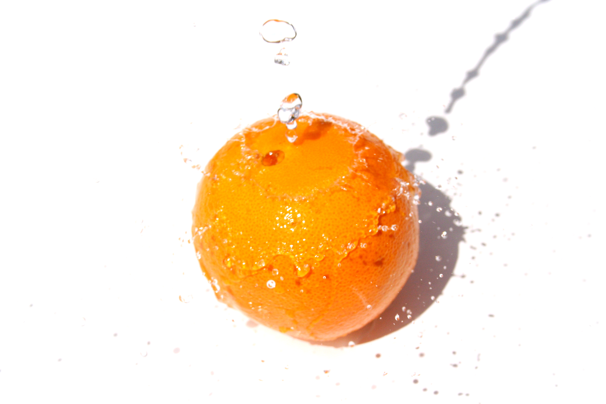

Rasakan Kelezatan yang Meledak-ledak
Dengan Setiap Gigitan, Rasakan Kehangatan dan Kemanisan Buah Jeruk yang Menggugah Selera.
beli disini

Dengan Setiap Gigitan, Rasakan Kehangatan dan Kemanisan Buah Jeruk yang Menggugah Selera.
beli disiniMenurt wikipedia,Jeruk (bahasa Inggris: orange) adalah buah dari spesies citrus dalam famili Rutaceae. Istilah "jeruk" umumnya mengacu pada Citrus x sinensis yang juga disebut jeruk manis dan Citrus aurantium yang disebut jeruk pahit. Jeruk manis berasal dari wilayah yang meliputi Tiongkok Selatan, India Timur Laut dan Myanmar.Penyebutan jeruk manis paling awal ditemukan dalam literatur Tiongkok pada 314 SM.Hingga 1987, pohon jeruk ditemukan sebagai pohon buah yang paling banyak dibudidayakan di dunia.
Jeruk juga dikenal karena rasa manisnya yang segar dan kaya akan vitamin C. Jeruk berasal dari spesies citrus dalam famili Rutaceae. Ada berbagai varietas jeruk, termasuk jeruk Navel, jeruk Valencia, jeruk mandarin, dan lainnya, masing-masing dengan ciri khas rasa dan penampilan yang unik. Selain menjadi buah yang lezat dan menyegarkan untuk dimakan langsung, jeruk juga sering digunakan untuk membuat minuman segar seperti jus jeruk yang terkenal. Selain itu, jeruk juga memiliki beragam manfaat kesehatan, karena kandungan vitamin dan antioksidannya yang tinggi. Konsumsi jeruk secara teratur dikaitkan dengan meningkatkan sistem kekebalan tubuh, menjaga kesehatan kulit, dan bahkan membantu dalam menurunkan risiko penyakit tertentu seperti penyakit jantung dan kanker. Dengan kombinasi rasa yang manis, aroma yang menyegarkan, dan manfaat kesehatan yang melimpah, jeruk tetap menjadi salah satu buah yang sangat dihargai dan dinikmati oleh banyak orang di seluruh dunia.

Jeruk Navel dikenal dengan karakteristik "pusar" di bagian bawah buahnya. Buah ini memiliki rasa manis dengan sedikit asam dan sering dikonsumsi secara langsung atau dibuat menjadi jus.

Jeruk Valencia adalah varietas yang sering digunakan untuk membuat jus jeruk karena memiliki rasa yang manis dan jumlah jus yang melimpah. Buahnya biasanya berukuran besar dan memiliki kulit yang tebal.

Jeruk mandarin memiliki kulit yang mudah dipelupuh dan sering kali memiliki rasa yang manis dengan sedikit keasaman. Varietas mandarin yang populer antara lain Clementine, Satsuma, dan Tangerine.

Jeruk ini dikenal dengan warna daging buah yang merah seperti darah, yang dihasilkan oleh pigmen alami bernama antosianin. Rasanya manis dengan sedikit rasa beraroma seperti berry.

Jeruk Bergamot memiliki kulit yang berwarna hijau kekuningan dan memiliki aroma yang khas. Buah ini sering digunakan dalam pembuatan minuman seperti Earl Grey tea dan parfum.

Jeruk Calamondin memiliki ukuran yang kecil dan memiliki rasa yang sangat asam. Buah ini sering digunakan dalam masakan dan sebagai bahan dalam minuman.

Jeruk Keprok adalah varietas jeruk yang berasal dari Indonesia. Buahnya berukuran besar dengan kulit yang tebal dan sering digunakan sebagai buah segar atau dibuat menjadi jus.